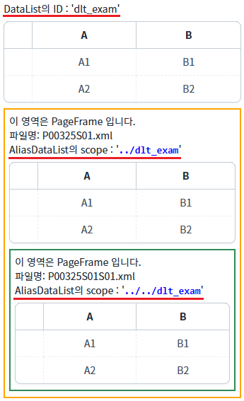
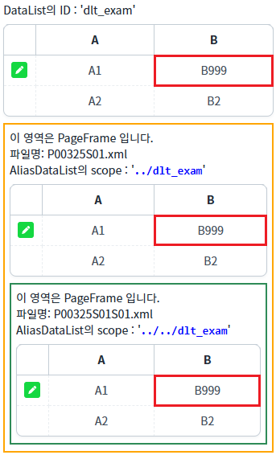
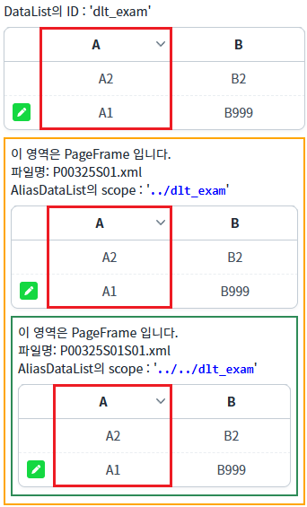
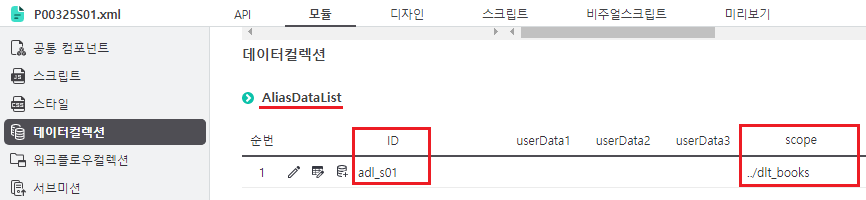

AliasDataList의 동작 방식을 확인할 수 있는 예제로 'scope' 속성 설정 예제입니다. 'scope' 속성에 상위(부모, 조상)의 DataList의 경로를 지정하면, 상위 DataList가 링크됩니다.
이 기능은 Sope이 설정된 경우만 동작합니다. 예를 들면 IFrame으로 구성된 화면에서 부모의 DataList는 연결되지 않습니다.
PageFrame 화면의 AliasDataList를 상위(부모 또는 조상) 화면의 DataList와 링크하기
각 버튼을 클릭하여 각 영역에 구성된 GridView의 데이터를 확인합니다.
1
STEP 1: 초기 상태를 확인합니다.
각 예시 영역에 GridView가 구성되어있고, PageFrame 영역의 GridView는 AliasDataList와 연결되어 있습니다. PageFrame의 AliasDataList는 상위(부모, 조상) 화면의 DataList가 scope으로 지정되어 있습니다.
Image 1.브라우저(Chrome) 실행 예시

2
STEP 2: 상위 화면의 DataList의 셀 데이터를 변경합니다.
"DataList의 첫 번째 행의 'B' 열의 셀 값 변경하기" 버튼을 클릭합니다.3
STEP 3: 실행된 결과를 확인합니다.
상위 화면 DataList 'dlt_exam'의 첫 번째 행의 'B' 컬럼의 값을 'B999'으로 할당합니다. 각 영역 GridView의 첫 번째 행의 'B' 컬럼의 값이 'B999'으로 변경됩니다.
Image 2.브라우저(Chrome) 실행 예시

4
STEP 4: 상위 화면의 DataList의 'A' 컬럼을 내림차순으로 정렬합니다.
"DataList의 'A' 컬럼을 내림차순으로 정렬하기" 버튼을 클릭합니다.5
STEP 5: 실행된 결과를 확인합니다.
각 영역 GridView의 헤더 컬럼 'A'에 내림차순 정렬 이미지가 표시되고, 데이터가 내림차순으로 정렬됩니다.
Image 3.브라우저(Chrome) 실행 예시

AliasDataList의 'scpoe'에 지정할 수 있는 DataList는 상위(부모, 조상) 화면에 가능합니다. 형제(sibling) 화면은 지원하지 않습니다.
1
AliasDataList의 속성을 정의합니다.
[필수] scope="DataList의 경로"
작성 예시 1) (상대 경로) 부모 화면의 DataList(ID: dlt_exam)
scope="../dlt_exam"
작성 예시 2) (상대 경로) 부모의 부모 화면의 DataList(ID: dataList1_main1)
scope="../../dataList1_main1"
작성 예시 3) (절대 경로) 최상위 화면의 DataList(ID: dataList1_main2)
scope="/dataList1_main2"
작성 예시 4) (절대 경로) 최상위 화면의 PageFrame(ID: pageFrame1) 화면의 DataList (ID: dataList1_pageFrame1)
scope="/pageFrame1/dataList1_pageFrame1"
Image 4.웹스퀘어 스튜디오의 데이터컬렉션 예시

예제 파일 'P00325S01.xml'과 'P00325S01S01.xml'에서도 설정을 확인할 수 있습니다.
Example 1.Source
<w2:aliasDataList scope="../dlt_exam" id="adl_s01"></w2:aliasDataList>
scope
setScope( scope )